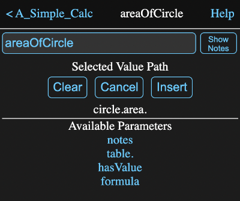

Formula Fields
All information views for tools have one or more formula fields, like this:

You can tap in this field and enter or edit the formula directly. Once you hit the return key or leave the field, the new formula will be applied and new results calculated as needed.
These fields can be identified by the equal sign in front of them. Tapping on the equal sign will cause the value calculated by the formula to be forgotten and recalculated. This normally isn't necessary as Math Minion will forget and recalculate tools whenever one of their inputs is modified.
Directly editing a formula field is fine for simple one line formulas, but for more complex formulas or where you would like help with units or functions, there is a more elaborate formula editor that you can invoke. This is done by either typing shift-enter while editing the field or by tapping the ⤢ icon to its right.
Formula Editor
The formula editor consists of a large text area where the formula is entered or modified, along with a number of buttons and a preview area.

When the formula editor appears, the current formula, if any, will appear in the text area with any cursor position or selection from the formula field maintained. The preview area will show the result of evaluating this formula.
As you enter or edit the formula, you can tap the Preview Button or type shift-enter to evaluate the current formula in the preview area. If you select only a part of the formula before previewing, only the selected portion will be evaluated. This is a handy way to debug complicated formulas.
Tapping the Current button or type alt-enter (option-enter on a Mac), will once again preview the original formula.
In more complex formulas and with some functions, it is common to space the formula out over multiple lines and use tabs to improve the readability. There are a couple of features to assist with this.
When you add a new line to an already indented line, the editor will automatically match the indentation.
You can increase or decrease the indentation of by selecting multiple lines and then typing tab or shift-tab respectively.
The Cancel button (escape key) will exit the formula editor without saving any of the changes. The Apply button (shift-enter) will exit the formula editor and any exit other than cancelling will assign the changes to the formula.
The top three buttons open helper views where you can select elements to be inserted into the formula:
<v> - Value Browser (shift-ctrl-v)
Shows the available tools and parameters that you can insert into the formula. When first invoked, the available parameters will be the tools in the current model or in the case of the formula belonging to an input expression, the parent model.
If you select a model, then its name will appear below the buttons and the available parameters will be its tools. When you select another type of tool, the available parameters for that tool will appear. For instance the matrix tool has parameters for the number of columns or rows it has.
In the example below, the first selection was the model named "circle", which contains an expression named "area". When area was in turn selected, it was added to the expression below the buttons. Tapping on Insert at this point would insert "circle.area" into the formula.
"u" - Unit Browser (ctrl-u)
Presents a view where you can select from the available units. The left pane contains the defined types and selecting one of those will fill the right pane with the units that are defined for that type.
In the image below, the type Area has been selected and then hectare was selected from the right pane. This places the selected unit in the input field.

Tapping the Apply button will insert the unit into the formula, enclosed in double quotes if it contains , / or ^.
You aren't limited to the units listed and can create your own by combining existing units in the input field, either by typing them in directly, or by selecting them from the lists. If you add a - or / operator to the end of the input field, selecting another unit will result in it being appended, rather than replacing the existing selection.
If you need to define a completely new base unit, see custom units on the units help page.
This browser is also used for selecting display units for expressions, matrices, data tables and graphs.
{f} - Function Browser - (ctrl-f)
Presents a view where you can browse the available built in Math Minion functions. As you can see in the image below, it has what are hopefully pretty clear instructions on how to use it.
In this case the section for trigonometric functions has been selected and then the sine function within it.